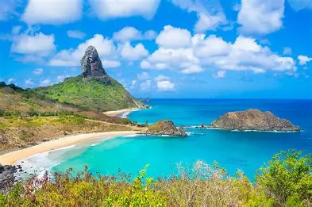
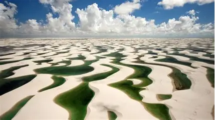
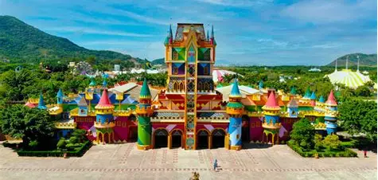

O Brasil possui uma grande diversidade cultural e regional, o que também se reflete nos índices de segurança entre suas cidades e estados. O país conta com forças policiais, sistemas de monitoramento e programas de segurança pública que atuam na proteção da população e no combate à criminalidade.Em grandes centros urbanos, é importante que moradores e turistas adotem cuidados básicos, como atenção aos pertences pessoais e evitar locais pouco movimentados durante a noite. Apesar dos desafios enfrentados em algumas regiões, o Brasil continua sendo um destino acolhedor e muito visitado por pessoas do mundo inteiro.
O Brasil é conhecido mundialmente por suas belezas naturais, diversidade cultural e clima tropical. O país oferece inúmeras opções de turismo, desde praias paradisíacas até ecoturismo, turismo histórico e grandes festas populares.Cidades como Rio de Janeiro, Salvador e São Paulo atraem milhões de visitantes todos os anos. Entre os principais pontos turísticos estão o Cristo Redentor, as Cataratas do Iguaçu, a Amazônia e o Pantanal, além do famoso Carnaval brasileiro.
O Brasil possui tradições culturais marcadas pela mistura de influências indígenas, africanas e europeias. A música, a dança e a culinária fazem parte da identidade nacional e variam de acordo com cada região do país.Entre as principais tradições estão o Carnaval, as festas juninas, a capoeira e o futebol, considerado uma paixão nacional. A culinária brasileira também é muito valorizada, com pratos típicos como feijoada, acarajé, pão de queijo e churrasco.

Fernando de Noronha
Cristo Redentor

Lençóis Maranheses

O Brasil vem ampliando seus investimentos em tecnologia e inovação nos últimos anos. O país possui empresas e centros de pesquisa atuando em áreas como tecnologia da informação, agronegócio, energia renovável e inteligência artificial.Cidades como São Paulo e Campinas são importantes polos tecnológicos e universitários. Além disso, startups brasileiras têm ganhado destaque internacional pela criação de soluções digitais e financeiras inovadoras.
O sistema de saúde do Brasil é formado por serviços públicos e privados. O Sistema Único de Saúde (SUS) oferece atendimento gratuito à população, incluindo consultas, vacinas, exames e tratamentos médicos.O país também possui hospitais e centros de pesquisa reconhecidos internacionalmente, além de campanhas de vacinação e programas de prevenção importantes para a saúde pública. Apesar dos desafios enfrentados em algumas regiões, o Brasil continua investindo na melhoria da infraestrutura e no acesso aos serviços de saúde para a população.
Porque viajar para Portugal